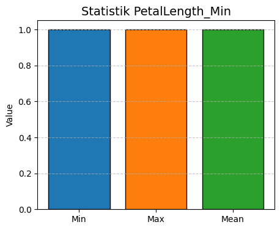
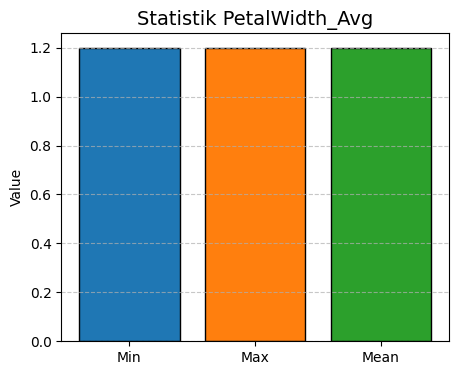
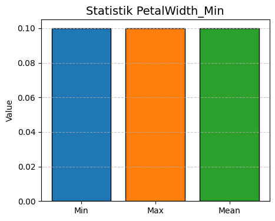
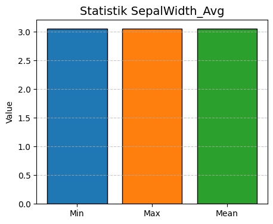
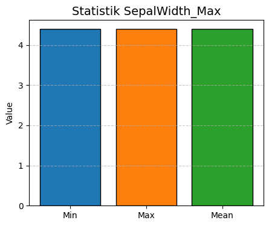
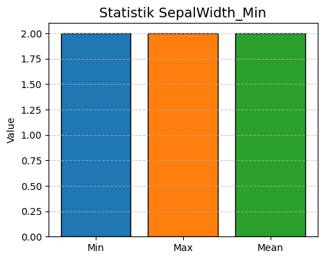
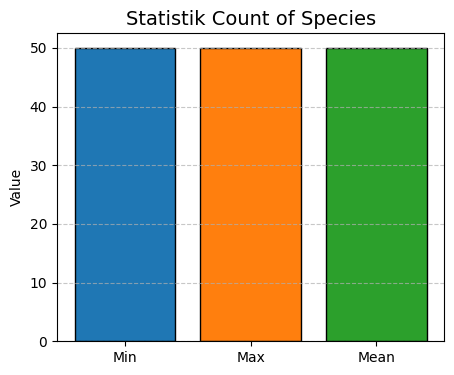
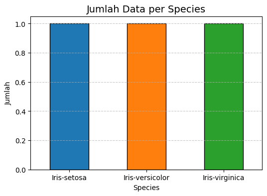

Explorasi Data#
# === 1. Import library ===
import pandas as pd
import matplotlib.pyplot as plt
# === 2. Upload semua CSV dari Power BI ===
try:
# Kalau di Colab
from google.colab import files
print("✔ Running on Google Colab - Silakan upload semua file CSV")
uploaded = files.upload()
file_names = list(uploaded.keys())
except ModuleNotFoundError:
# Kalau di lokal
print("✔ Not running on Colab - Baca file CSV dari folder lokal")
# Ganti dengan daftar file CSV kamu di lokal
file_names = ["PetalLength.csv", "PetalWidth.csv", "SepalLength.csv", "SepalWidth.csv", "Species.csv"]
# === 3. Gabungkan semua CSV ===
dfs = [pd.read_csv(f) for f in file_names]
df_all = pd.concat(dfs, axis=1)
# === 4. Chart Min, Max, Mean per kolom (pisah) ===
num_cols = [col for col in df_all.columns if col != "Species"]
for col in num_cols:
min_val = df_all[col].min()
max_val = df_all[col].max()
mean_val = df_all[col].mean()
plt.figure(figsize=(5,4))
plt.bar(["Min", "Max", "Mean"], [min_val, max_val, mean_val],
color=["#1f77b4", "#ff7f0e", "#2ca02c"], edgecolor="black")
plt.title(f"Statistik {col}", fontsize=14)
plt.ylabel("Value")
plt.grid(axis="y", linestyle="--", alpha=0.7)
plt.show()
# === 5. Chart Jumlah Data per Species ===
if "Species" in df_all.columns:
kelas_count = df_all["Species"].value_counts()
plt.figure(figsize=(6,4))
kelas_count.plot(kind="bar", color=["#1f77b4","#ff7f0e","#2ca02c"], edgecolor="black")
plt.title("Jumlah Data per Species", fontsize=14)
plt.xlabel("Species")
plt.ylabel("Jumlah")
plt.xticks(rotation=0)
plt.grid(axis="y", linestyle="--", alpha=0.7)
plt.show()
else:
print("\n⚠️ Kolom 'Species' tidak ditemukan di data.")
✔ Not running on Colab - Baca file CSV dari folder lokal







